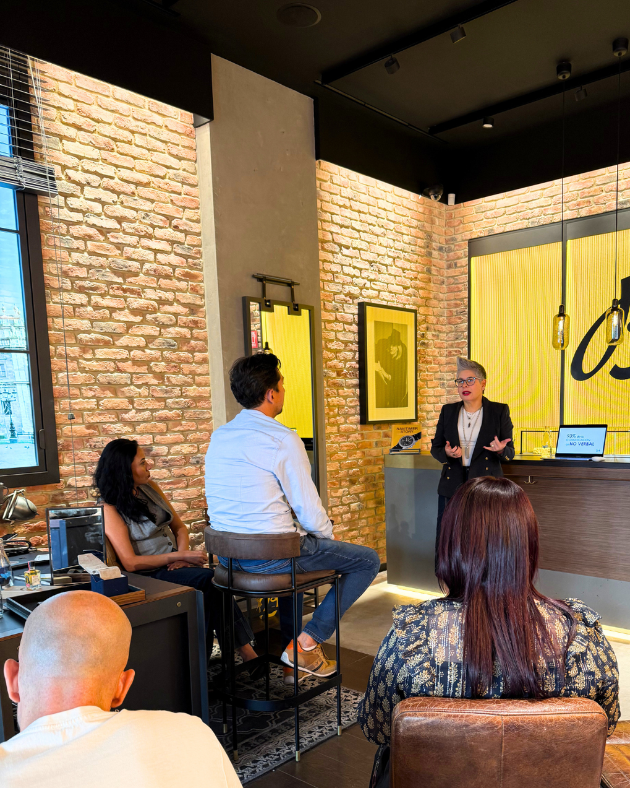

Presencia
La forma en que te presentas empieza a tener más peso cuando tu responsabilidad, visibilidad o facturación crecen.
Cursos y Coaching
Si tu visibilidad, responsabilidad o facturación ya crecieron, tu imagen necesita reflejarlo con claridad.
Trabajo con líderes, profesionistas y equipos que necesitan alinear identidad, presencia y decisiones para proyectar autoridad real en entornos de alta exigencia.
Porque puedes tener el nivel, pero si no se refleja, no se percibe.

Percepción profesional
La forma en que te presentas empieza a tener más peso cuando tu responsabilidad, visibilidad o facturación crecen.
Cuando tu nivel ya está, pero no se traduce con claridad, otros pueden leer menos autoridad de la que sostienes.
El trabajo ordena lo interno y lo visible para que lo que haces, decides y proyectas juegue a tu favor.
Servicios
Procesos diseñados para acompañar decisiones, liderazgo y posicionamiento cuando la imagen necesita sostener el nivel que hoy ya estás habitando.
Para quién
Personas que toman decisiones de alto impacto y necesitan una presencia coherente con la responsabilidad que sostienen.
Personas que representan marcas, empresas o equipos y necesitan comunicar valor con claridad.
Empresas que buscan coherencia entre proyección externa, cultura interna y comunicación profesional.
Programas diseñados desde objetivos claros de posicionamiento, relación con clientes y presencia.

Sobre Sonia
Sonia McRorey acompaña procesos donde la imagen deja de ser un recurso superficial y se convierte en soporte para decisiones, liderazgo y posicionamiento. Su enfoque integra presencia, percepción, autoconcepto y coherencia visual desde el contexto real de cada persona, equipo u organización.
La imagen no se construye desde la imitación ni desde normas externas; se sostiene cuando existe coherencia entre lo que haces, lo que decides y lo que proyectas.
-Sonia McRorey
Miembro activo de AICI y Vicepresidenta / VP de Educación AICI Guadalajara 2024-2026.
Que dicen?
Llegué al proceso creyendo que trabajaríamos solo la imagen externa. Descubrí cómo mi forma de vestir estaba comunicando inseguridad, incluso cuando mi rol exigía liderazgo y claridad. Con Sonia pude reconocerlo y transformar una presencia que me protegía, pero también levantaba barreras.
Pamela StadeckerTrabajar mi imagen personal fue un punto de inflexión. Entendí que la imagen es una extensión directa del merecimiento, la seguridad y la forma en que te posicionas. El proceso me ayudó a exponer ideas, defender mi trabajo y ocupar mayor espacio profesional.
Rubi MiramontesFui escéptico al inicio. Con Sonia entendí que la imagen no es apariencia, sino liderazgo interno. Más allá de lo externo, desarrollé seguridad, control emocional y una presencia más clara para tomar decisiones y conducir mi empresa.
Emmanuel GonzalezPublicaciones
Las personas que más dan muchas veces son las que más dificultad tienen para recibir. No porque no quieran, sino porque durante años aprendieron que su valor dependía de cuánto entregaban.
Leer artículoFAQ
Es especialmente útil cuando tu responsabilidad, visibilidad o etapa profesional necesita una imagen que pueda sostenerse con claridad.
Desde identidad, presencia, mentalidad, contexto y decisiones visuales aplicables. No desde fórmulas externas.
Si necesitas que la imagen deje de ser una preocupación y se convierta en un soporte para liderazgo, comunicación o posicionamiento, este trabajo puede ayudarte.
Mayor claridad para decidir, vestir, comunicar, presentarte y sostener una presencia coherente con el nivel que ocupas.
Contacto
WeWork | Av. Adolfo López Mateos Norte 95, Col. Italia Providencia, Guadalajara, Jalisco, 44648, México.
Solo con citas: lunes a viernes, de 9:00 a.m. a 6:00 p.m. El mensaje se prepara directamente para WhatsApp.